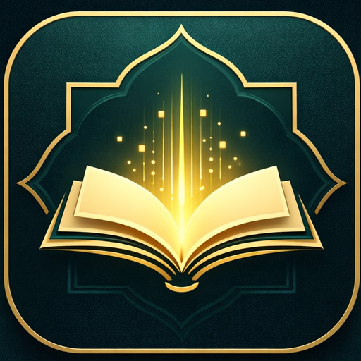

بارلىق كىتابلار

ئىچىدە PDF · TXT · DOCX · DOC · MD ھۆججەتلىرى بار ھۆججەتخانىنى تاللاڭ:
ماقالە ئادرېسىنى كىرگۈزسىڭىز، بەتنىڭ ئاساسىي مەزمۇنى (ئىزدەش بالدىقى، ئۇلانما، ئېلانلارسىز) ساپ تېكىست ھالىتىدە كىتاب بولۇپ ساقلىنىدۇ:
قوزغاتسىڭىز ئوقۇغۇچتا AI كۇنۇپكىسى كۆرۈنىدۇ
ھەقسىز API ئاچقۇچىنى aistudio.google.com تور بېتىنىڭ «Get API key» بۆلىكىدىن ھاسىل قىلىپ كۆچۈرۈپ، بۇ يەرگە چاپلاڭ. (كونا ئاچقۇچلار «AIza» بىلەن، يېڭىلىرى «AQ.» بىلەن باشلىنىدۇ)
ئەگەر يۇقىرىدىكى Gemini API ئاچقۇچى ئالدىراش، ھەققى توشقان ياكى ئىناۋەتسىز بولۇپ قالسا، زاپاس ئاچقۇچقا ئاپتوماتىك ئالمىشىدۇ. ھەر بىر زاپاس ئاچقۇچنى ھاسىل قىلغاندا چوقۇم «Choose an imported project» دىن ئوخشىمىغان «project» بەلگىلەپ ھاسىل قىلىڭ. شۇنداق بولغاندا، ھەربىر Gemini API مۇستەقىل ھەققى بولىدۇ.
ئۆزىڭىزگە تەۋە رەقەملىك كۇتۇپخانا